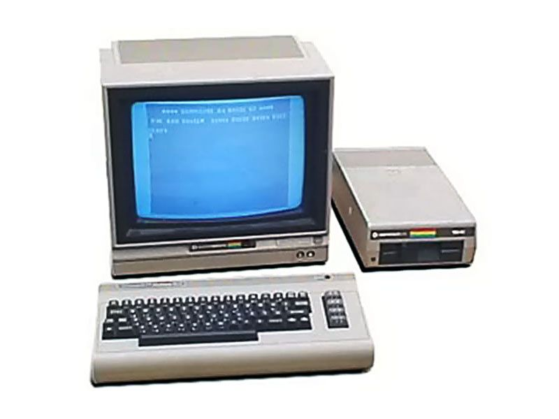
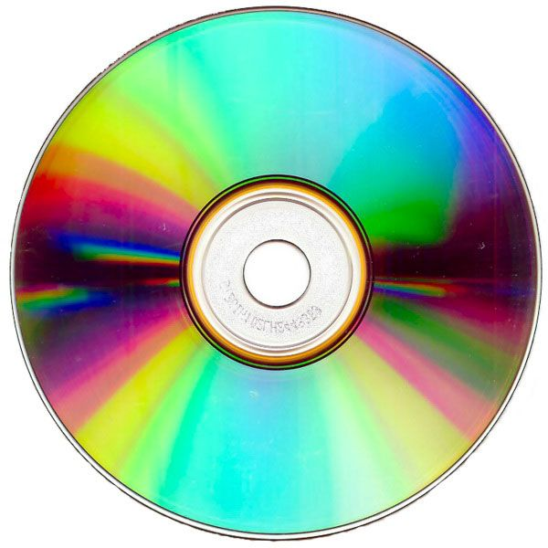
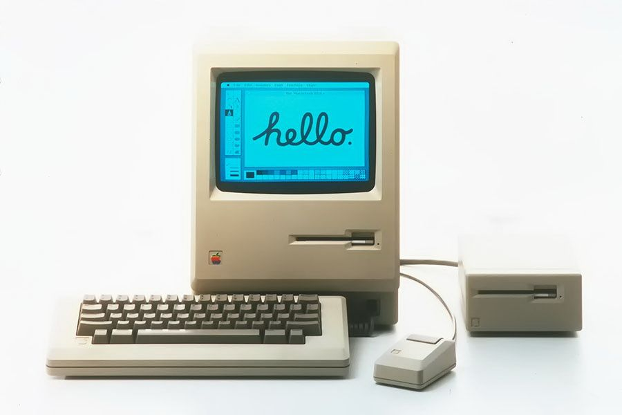
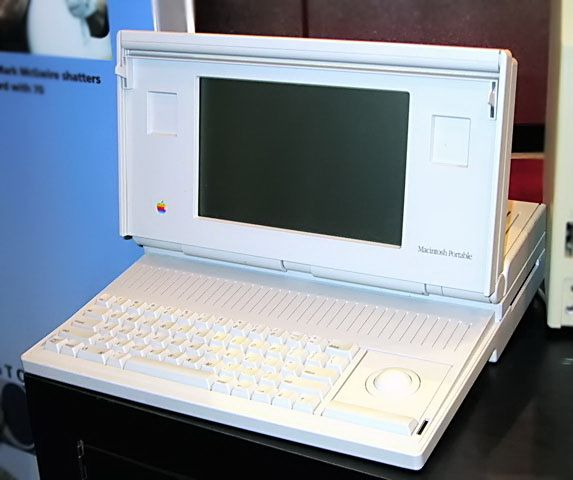

 The C64, as it is better known, sells for $595, comes with 64 KB of RAM and features impressive graphics. Thousands of software titles were released over the lifespan of the C64 and by the time it was discontinued in 1993, it had sold more than 22 million units. It is recognized by the 2006 Guinness Book of World Records as the greatest selling single computer of all time.
 Able to hold 550 megabytes of pre-recorded data, CD-ROMs grow out of music Compact Disks (CDs). The CD was developed by Sony and Philips in 1982 for distributing music. The first general-interest CD-ROM product released after Philips and Sony announced the CD-ROM format in 1984 was Grolier's Electronic Encyclopedia, which came out in 1985. The 9 million words in the encyclopedia only took up 12 percent of the available space. The same year, computer and electronics companies worked together to set a standard for the disks so any computer would be able to access the information.
 Apple introduces the Macintosh with a television commercial during the 1984 Super Bowl, which plays on the theme of totalitarianism in George Orwell's book 1984. The ad featured the destruction of "Big Brother" - a veiled reference to IBM -- through the power of personal computing found in a Macintosh. The Macintosh was the first successful mouse-driven computer with a graphical user interface and was based on the Motorola 68000 microprocessor. Its price was $2,500. Applications that came as part of the package included MacPaint, which made use of the mouse, and MacWrite, which demonstrated WYSIWYG (What You See Is What You Get) word processing.
The C++ programming language emerges as the dominant object-oriented language in the computer industry when Bjarne Stroustrup publishes the book The C++ Programming Language. Stroustrup, from AT&T Bell Labs, said his motivation stemmed from a desire to create a language that would allow for more complex programs and which combined the low-level features of BCPL with the high-level structures of Simula. According to Stroustrup: "C++ is a general purpose programming language designed to make programming more enjoyable for the serious programmer.
 Apple had initially included a handle in their Macintosh computers to encourage users to take their Macs on the go, though not until five years after the initial introduction does Apple introduce a true portable computer. The Macintosh Portable was heavy, weighing sixteen pounds, and expensive (US$6,500). Sales were weaker than projected, despite being widely praised by the press for its active matrix display, removable trackball, and high performance. The line was discontinued less than two years later.